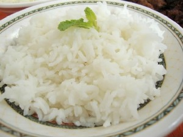
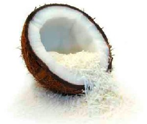
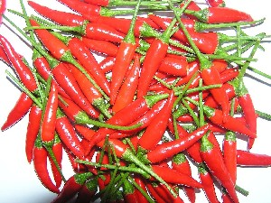
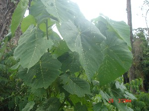
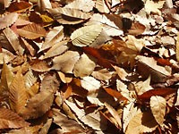

E - e
-e1 -ए CASE का. benefactive case; सम्प्रदान कारक. SD: grammar, व्याकरण. SEE: -e2 ‘clitic, third singular object’ ‘क्लिटिक, तृतीय एकवचन कर्मवाचक -एhm:{2}’.
-e2 -ए CLT क्लिटिक. clitic, third singular object; तृतीय एकवचन कर्मवाचक क्लिटिक. o ʈoŋ-e šerep ओ टोङे शेरेप. He cut the tree. उसने पेड़ काट दिया।. SD: grammar, व्याकरण. NT: postnominal. उपसर्ग।. SEE: -e1 ‘benefactive case’ ‘सम्प्रदान कारक -एhm:{1}’.
ebɑene एबाएने MORPH: e-bɑene. N सं. cover or mesh around intestine; आंत के पास का छिद्र या परत. ʈʰ-e-bɑene ठेबाएने. cover or mesh around my intestine. मेरी आंत के पास छिद्र या परत. SD: body part term, शारीरिक अंग शब्दावली.
ebɑlɑ एबाला MORPH: e-bɑlɑ. N सं. hand; arm; हाथ; बांह.  ʈʰ-e-bɑlɑ ठेबाला. my hand or arm. मेरा हाथ या बांह. SD: body part term, शारीरिक अंग शब्दावली.
ʈʰ-e-bɑlɑ ठेबाला. my hand or arm. मेरा हाथ या बांह. SD: body part term, शारीरिक अंग शब्दावली.
ebɑlɑtɑrɑɖole एबालाताराडोले MORPH: e-bɑlɑ-tɑrɑɖole. N सं. elbow; कोहनी. ʈʰe-bɑlɑ-tɑrɑɖole ठेबालाताराडोले. my elbow. मेरी कोहनी. SD: body part term, शारीरिक अंग शब्दावली.
ebɑlɔ एबालौ VAR: ebɑːllɔ एबाऽल्लौ. N सं. a kind of creeper; एक प्रकार की लता. SD: flora, फूल-पत्ती. NT: Its fibre is used for making bowstrings. धनुष की कमान बनाने में प्रयुक्त।.Environmental
ebɑno एबानो MORPH: e-bɑno. V क्रि. make; बनाना. e-bɑno nɔl-et cɔt-e एबानो नौलेत चौते. Make it properly. (इसे) ठीक से बनाओ।.  peje tɑrɑotbikɑ cokbibi bɑno पेजे ताराओत्बीका चोक्बीबी बानो. Peje started cooking turtle before sunrise. पेजे ने सूर्योदय से पहले कछुआ पकाना शुरू कर दिया।.
peje tɑrɑotbikɑ cokbibi bɑno पेजे ताराओत्बीका चोक्बीबी बानो. Peje started cooking turtle before sunrise. पेजे ने सूर्योदय से पहले कछुआ पकाना शुरू कर दिया।.
ebeːnɔ एबेऽनौ N सं. fruit, overripe; ज़्यादा पका हुआ फल. SD: edible fruit, खाद्य फल.Environmental
ebɛc एबैच MORPH: e-bɛc. N सं. body hair; शरीर के बाल. kɔrɔn-e-bɛc कौरौनेबैच. dugong’s body hair. डूगोंग के शरीर के बाल. SD: body part term, शारीरिक अंग शब्दावली.
 ebicɔw एबीचौव N सं. posterior, of dugong; डूगोंग का पिछला हिस्सा. SD: body part term, शारीरिक अंग शब्दावली, marine, समुद्री.Environmental
ebicɔw एबीचौव N सं. posterior, of dugong; डूगोंग का पिछला हिस्सा. SD: body part term, शारीरिक अंग शब्दावली, marine, समुद्री.Environmental
ebijow एबीजोव N सं. fruit, unripe; कच्चा फल. SD: edible fruit, खाद्य फल.Environmental
ebio एबीओ MORPH: e-bio. V क्रि. bite; काटना. et-bio-k-e एतबीओके. Bite it. इसे काटो।.
ebipʰulu एबीफूलू MORPH: e-bi-pʰulu. ADJ वि. orphan; अनाथ. SD: relationship, सम्बंध.
ebirɑŋ एबीराङ Etym: Jeru. ADJ वि. red colour; लाल रंग. SD: attribute, विशेषता.
 ebitɑrɑ एबीतारा MORPH: e-bitɑrɑ. N सं. back of the head; सिर का पिछला हिस्सा.
ebitɑrɑ एबीतारा MORPH: e-bitɑrɑ. N सं. back of the head; सिर का पिछला हिस्सा.  ʈʰe-bitɑrɑ ठेबीतारा. back side of my head. मेरे सिर का पिछला हिस्सा. SD: body part term, शारीरिक अंग शब्दावली.
ʈʰe-bitɑrɑ ठेबीतारा. back side of my head. मेरे सिर का पिछला हिस्सा. SD: body part term, शारीरिक अंग शब्दावली.
 ebitobɛc एबीतोबैच MORPH: e-bito-bɛc. N सं. pubic hair; गुप्त बाल.
ebitobɛc एबीतोबैच MORPH: e-bito-bɛc. N सं. pubic hair; गुप्त बाल.  ʈʰ-e-bito-bɛc ठेबीतोबैच. my pubic hair. मेरे गुप्त बाल. SD: body part term, शारीरिक अंग शब्दावली.
ʈʰ-e-bito-bɛc ठेबीतोबैच. my pubic hair. मेरे गुप्त बाल. SD: body part term, शारीरिक अंग शब्दावली.
ebitoʈoɔ एबीतोटोऔ MORPH: e-bitoʈoɔ. N सं. pelvis; श्रोणि. ʈʰ-e-bitoʈoɔ ठे बीतोटोऔ. my pelvis. मेरी श्रोणि. SD: body part term, शारीरिक अंग शब्दावली.
ebittɑrɑːʈɑːlɑːr एबीत्ताराऽटाऽलाऽर MORPH: e-bittɑrɑːʈɑːlɑːr. N सं. baldness at the back of the head; सिर के पीछे की गंज. SD: body part term, शारीरिक अंग शब्दावली.
ebiʈkʰe एबीट्खे MORPH: e-biʈ-kʰe. V क्रि. carry (on shoulder); उठाना (कंधे पर).
ebiʈɔlɔm एबीटौलौम MORPH: e-biʈɔlɔm. Etym: Bo; बो. N सं. kidney; गुर्दा. SD: body part term, शारीरिक अंग शब्दावली. SEE: ɛttɑycow ‘kidney’ ‘गुर्दा ऐत्तायचोव ’.
eboe एबोए MORPH: e-boe. VAR: e-bɔe एबौए; e-bui एबूई; e-boi एबोई; ɛ-boi ऐबोई. N सं. husband; wife; spouse; पति; पत्नी; जीवन-साथी.  ʈʰeboi ठेबोई. my spouse. मेरा पति या पत्नी. SD: kin term, सम्बंधी वाचक शब्दावली.
ʈʰeboi ठेबोई. my spouse. मेरा पति या पत्नी. SD: kin term, सम्बंधी वाचक शब्दावली.
eboiɑ एबोईआ ADJ वि. ripen; mature; boiled; पका हुआ; तैयार; उबला हुआ. SD: attribute, विशेषता.
eboitoɑtʰu एबोईतोआथू MORPH: e-boi-toɑ-tʰu. N सं. husband’s elder brother; जेठ; पति के बड़े भाई. ʈʰ-e-boi-toɑ-tʰu ठेबोईतोआथू. my husband’s elder brother. मेरे जेठ; मेरे पति के बड़े भाई. SD: kin term, सम्बंधी वाचक शब्दावली. NT: Literal meaning: boy born before my husband. शाब्दिक अनुवादः ‘मेरे पति के पहले पैदा होने वाले अग्रज’।.
ebotɑti एबोताती MORPH: e-bo-t-ɑ-ti. Etym: Little Andaman (Onge); ओंगे. N सं. eyelid; पलक. SD: body part term, शारीरिक अंग शब्दावली.
ebottɔe एबोत्तौए MORPH: e-bot-tɔe. N सं. hips; नितम्ब. ʈʰ-e-bot-tɔe ठेबोत्तौए. my hips. मेरे नितम्ब. SD: body part term, शारीरिक अंग शब्दावली.
ebɔikɔlɔt एबौईकौलौत MORPH: e-bɔi-kɔlɔt. N सं. bride, a newly wed; नई-नवेली दुल्हन. SD: people, लोग.
ebɔʈ एबौट N सं. parcel; पार्सल. SD: household, घरेलू.
ebɔʈe एबौटे V क्रि. parcel; पार्सल बनाना.
ebucɔk एबूचौक MORPH: e-bucɔk. N सं. leg; पांव. ŋebucɔk ङेबूचौक. your leg. तुम्हारे पांव. SD: body part term, शारीरिक अंग शब्दावली.
 |
 ebui एबूई VAR: iboi ईबोई. N सं. cooked food; पका हुआ खाना. rɛpʰe boi रैफे बोई. cooked food. पका चावल. SD: cooking & food, खाना-पीना. SEE: rɛfe1 ‘cooked meal; food; lunch or dinner’ ‘तैयार भोजन; खाना; मध्याह्न भोजन या रात्रि भोजन रैफेhm:{1}’; rɛfe2 ‘rice’ ‘चावल रैफेhm:{2}’.
ebui एबूई VAR: iboi ईबोई. N सं. cooked food; पका हुआ खाना. rɛpʰe boi रैफे बोई. cooked food. पका चावल. SD: cooking & food, खाना-पीना. SEE: rɛfe1 ‘cooked meal; food; lunch or dinner’ ‘तैयार भोजन; खाना; मध्याह्न भोजन या रात्रि भोजन रैफेhm:{1}’; rɛfe2 ‘rice’ ‘चावल रैफेhm:{2}’.
eburɑːculuttʰuːwe एबूराऽचूलूत्थूऽवे MORPH: e-burɑːculuttʰuːwe. N सं. wife’s brother; साला. ʈʰeburɑːculuttʰuːwe ठेबूराऽचूलूत्थूऽवे. my wife’s brother. मेरा साला. SD: kin term, सम्बंधी वाचक शब्दावली.
eburɔŋo1 एबूरौंङो MORPH: e-burɔŋo. N सं. edge; किनारा. ʈɔrɔ-burɔŋo टौरौबूरौङो. sandy beach. बालू का तट. SD: navigation, नौका संचालन. SEE: eburɔŋo2 ‘angle of a rib, side of the body’ ‘पसली एबूरौंङोhm:{2}’.Environmental
eburɔŋo2 एबूरौङो MORPH: e-burɔŋo. VAR: eburoŋɔ एबूरोङौ. N सं. angle of a rib, side of the body; पसली का घुमाव, बदन का किनारा.  ʈʰɛ -buroŋo ठै बूरोङो. my angle of ribs. मेरी पसलियों का घुमाव. SD: body part term, शारीरिक अंग शब्दावली. SEE: eburɔŋo1 ‘edge’ ‘किनारा एबूरौङोhm:{1}’.
ʈʰɛ -buroŋo ठै बूरोङो. my angle of ribs. मेरी पसलियों का घुमाव. SD: body part term, शारीरिक अंग शब्दावली. SEE: eburɔŋo1 ‘edge’ ‘किनारा एबूरौङोhm:{1}’.
ebuʈko एबूटको N सं. root, protruded; बाहर उभरी हुई जड़. SD: flora, फूल-पत्ती.Environmental
 ecɑkʰɑmo एचाखामो VAR: e-cɑkʰɑmɑo एचाखामाओ; cɑ-kʰɑmu चाखामू. ADJ वि. old (man); elderly man; बूढ़ा (आदमी); बुजुर्ग. SD: people, लोग.
ecɑkʰɑmo एचाखामो VAR: e-cɑkʰɑmɑo एचाखामाओ; cɑ-kʰɑmu चाखामू. ADJ वि. old (man); elderly man; बूढ़ा (आदमी); बुजुर्ग. SD: people, लोग.
 ecɑkʰem एचाखेम MORPH: e-cɑkʰem. ADJ वि. tasteless; फीका; स्वादहीन. SD: attribute, विशेषता.
ecɑkʰem एचाखेम MORPH: e-cɑkʰem. ADJ वि. tasteless; फीका; स्वादहीन. SD: attribute, विशेषता.
 ecɑy एचाय MORPH: e-cɑy. ADJ वि. dirty; गंदा. ʈʰi-cɑːe ठीचाऽए. dirty place. गंदी जगह. ecɑeʈoʈ ino एचाएटोट ईनो. dirty water. गंदा पानी. SD: attribute, विशेषता.
ecɑy एचाय MORPH: e-cɑy. ADJ वि. dirty; गंदा. ʈʰi-cɑːe ठीचाऽए. dirty place. गंदी जगह. ecɑeʈoʈ ino एचाएटोट ईनो. dirty water. गंदा पानी. SD: attribute, विशेषता.
eccɑːkko एच्चाऽक्को N सं. younger brother; छोटा भाई. SD: kin term, सम्बंधी वाचक शब्दावली.
eccɑːttɑːkkɔ एच्चाऽत्ताऽक्कौ ADJ वि. good; अच्छा. SD: attribute, विशेषता.
eccoɖop एच्चोडोप MORPH: et-co-ɖop. N सं. raw fruit; कच्चा फल. SD: edible fruit, खाद्य फल.Environmental
eccoːʈkɔ एच्चोऽट्कौ N सं. root (big); जड़ (बड़ी). SD: flora, फूल-पत्ती.Environmental
ecer एचेर N सं. thing to be kept carefully; संभाल कर रखनेवाली चीज़. SD: household, घरेलू.
ecɛrʈɔktotlɑ एचैरटौक्तोत्ला MORPH: ecɛrʈɔk-totlɑ. ADJ वि. industrious; मेहनती. SD: attribute, विशेषता.
ecoroːkʰtɔbun एचोरोऽखतौबून MORPH: e-coroːkʰ-tɔbun. N सं. knee; घुटना. ʈʰe-coroːkʰtɔbun ठेचोरोऽखतौबून. my knee. मेरा घुटना. SD: body part term, शारीरिक अंग शब्दावली. SEE: ɑkɑpʰitcɔrok ‘area behind the knees’ ‘घुटनों का पिछला हिस्सा आकाफीतचौरोक ’.
ecorɔk एचोरौक MORPH: e-corɔk. N सं. elbow hinge; कोहनी का कब्ज़ा.  meŋ-e-corɔk मेङे चोरौक. hinge/ ball of our elbows. हमारी कोहनी का कब्ज़ा. SD: body part term, शारीरिक अंग शब्दावली.
meŋ-e-corɔk मेङे चोरौक. hinge/ ball of our elbows. हमारी कोहनी का कब्ज़ा. SD: body part term, शारीरिक अंग शब्दावली.
 ecoʈɔe1 एचोटौए MORPH: e-co-ʈɔe. N सं. head bone; सिर की हड्डी. ʈʰe-co-ʈɔe ठेचोटौए. my head bone. मेरे सिर की हड्डी. SD: body part term, शारीरिक अंग शब्दावली. SEE: ecoʈɔe2 ‘skull’ ‘खोपड़ी एचोटौएhm:{2}’.
ecoʈɔe1 एचोटौए MORPH: e-co-ʈɔe. N सं. head bone; सिर की हड्डी. ʈʰe-co-ʈɔe ठेचोटौए. my head bone. मेरे सिर की हड्डी. SD: body part term, शारीरिक अंग शब्दावली. SEE: ecoʈɔe2 ‘skull’ ‘खोपड़ी एचोटौएhm:{2}’.
 ecoʈɔe2 एचोटौए MORPH: e-co-ʈɔe. N सं. skull, lit. head bone; खोपड़ी, शाब्दिक अर्थः सिर की हड्डी. SD: body part term, शारीरिक अंग शब्दावली. SEE: ecoʈɔe1 ‘head bone’ ‘सिर की हड्डी एचोटौएhm:{1}’.
ecoʈɔe2 एचोटौए MORPH: e-co-ʈɔe. N सं. skull, lit. head bone; खोपड़ी, शाब्दिक अर्थः सिर की हड्डी. SD: body part term, शारीरिक अंग शब्दावली. SEE: ecoʈɔe1 ‘head bone’ ‘सिर की हड्डी एचोटौएhm:{1}’.
ecɔɸe erɑkɑmu एचौफे एराकामू MORPH: ecɔɸe-erɑkɑmu. VAR: ɛ-rɑ-kɑme ऐराकामे. ADJ वि. too many; कई सारे. SD: quantifier, परिमाण वाचक.
ecɔkʰɔ एचौखौ MORPH: e-cɔkʰɔ. N सं. brother, elder; बड़ा भाई. ʈʰɛ-cɔkʰɔ-kɔi ठैचौखौकौई. my elder brother. मेरा बड़ा भाई. SD: kin term, सम्बंधी वाचक शब्दावली.
ecɔloboŋ एचौलोबोङ MORPH: e-co-loboŋ. ADJ वि. long-headed; चतुर; बुद्धिमान. SD: attribute, विशेषता. NT: A slang word. बोलचाल की भाषा का लटका।.
ecɔŋ एचौङ MORPH: e-cɔŋ. V क्रि. hammer; हथौड़ा मारना; ठोकना.
ecɔpʈʰomu एचौपठोमू MORPH: e-cɔp-ʈʰomu. N सं. thigh; जांघ. ʈʰe-cɔp-ʈʰomu ठेचौपठोमू. my thigh. मेरी जांघ. SD: body part term, शारीरिक अंग शब्दावली.
ecɔrɔkʰrɔɑ एचौरौखरौआ MORPH: ecɔrɔkʰ-rɔɑ. N सं. raft made by tying logs together; लट्ठों का बेड़ा. SD: boat related, नाव सम्बंधी.Environmental
 eɖirim एडीरीम ADJ वि. black; काला.
eɖirim एडीरीम ADJ वि. black; काला.  ʈʰeɖirim totco ठेडीरीम तोत्चो. I am black/ dark. मैं काला हूं।. SD: attribute, विशेषता.
ʈʰeɖirim totco ठेडीरीम तोत्चो. I am black/ dark. मैं काला हूं।. SD: attribute, विशेषता.
efɑːe एफाऽए N सं. hard dry (leaf); कड़क सूखा (पत्ता). SD: flora, फूल-पत्ती.Environmental
efonne एफोन्ने MORPH: efon-ne. VAR: efoːŋ-ne एफोऽङने. V क्रि. dig; खुदाई.
efuk एफूक MORPH: e-fuk. VAR: e-pʰup एफूप. N सं. lungs; फेफड़े. SD: body part term, शारीरिक अंग शब्दावली.
 eɸil1 एफील VAR: epʰil एफील; ipʰil ईफील; efil एफील. V क्रि. die; मरना. SEE: eɸil2 ‘throw’ ‘फेंकना एफीलhm:{2}’.
eɸil1 एफील VAR: epʰil एफील; ipʰil ईफील; efil एफील. V क्रि. die; मरना. SEE: eɸil2 ‘throw’ ‘फेंकना एफीलhm:{2}’.
 eɸil2 एफील VAR: epʰil एफील; ipʰil ईफील; efil एफील. V क्रि. throw from top; ऊपर से फेंकना. SEE: eɸil1 ‘die’ ‘मरना एफीलhm:{1}’.
eɸil2 एफील VAR: epʰil एफील; ipʰil ईफील; efil एफील. V क्रि. throw from top; ऊपर से फेंकना. SEE: eɸil1 ‘die’ ‘मरना एफीलhm:{1}’.
 ei एई VAR: eːi एऽई; ɛy ऐय. V क्रि. vomit; उल्टी. ʈʰu-ei-bɔm ठूएईबौम. I vomit. मैं उल्टी करता हूं।.
ei एई VAR: eːi एऽई; ɛy ऐय. V क्रि. vomit; उल्टी. ʈʰu-ei-bɔm ठूएईबौम. I vomit. मैं उल्टी करता हूं।.
eːiː एऽईऽ INTJ वि बो. yes (hon.); हां. SD: particle, निपात.
eiɑ एईआ INTJ वि बो. ok!; ठीक है. SD: emotion, भावनात्मक.
 eiːbe एईबे VAR: eibe एईबे. N सं. barren woman; बांझ. SD: people, लोग.
eiːbe एईबे VAR: eibe एईबे. N सं. barren woman; बांझ. SD: people, लोग.
eilin एईलीन ADJ वि. hot (chilli); तेज़ (मिर्च). SD: attribute, विशेषता.
 |
eiŋšoŋo एईनशोङो MORPH: ei-iŋ-šoŋo. Etym: Bo; बो. N सं. white flesh of a coconut; नारियल की मलाई/गूदा. SD: flora, फूल-पत्ती.Environmental
eišɔŋo एईशौङो MORPH: e-i-šɔŋo. VAR: cɔŋɔ चौङौ. N सं. body; बदन. meŋ-e-i-šoŋo मेङेईशोङो. our body. हमारा शरीर. ʈʰoicɔŋɔ ठोईचौङौ. my body. मेरा शरीर. SD: body part term, शारीरिक अंग शब्दावली.
eiyɑ एईया INTJ वि बो. yes (hon.); हां (सम्मानसूचक). SD: emotion, भावनात्मक.
ejido एजीदो Etym: North Andaman; उत्तरी अण्डमान. N सं. address term for a boy post-puberty; किशोरावस्था प्राप्त लड़के के लिए संबोधक शब्द. SD: address term, सम्बोधन वाचक शब्दावली.
ejiɖo एजीडो N सं. scar/mark made on skin by etching; शरीर पर खरोंचकर निशान बनाना. SD: attribute, विशेषता. NT: Generally, tattoos are made on the area between the neck and the waist, between the shoulder and the elbow, and on the forehead and cheeks. This is a painful process in which two to three people hold the boy. This is performed immediately after the turtle-eating ceremony. The sideburns are also cut. ये निशान गर्दन से कमर के बीच, कंधों से कुहनी के बीच, माथे पर और गाल पर गोदे जाते हैं। इसको गोदते समय लड़के को दो-तीन लोग पकड़े रहते हैं क्योंकि यह प्रक्रिया बहुत पीड़ादायक होती है। कछुआ खाने की रस्म के तुरन्त बाद ही यह गुदना गोदा जाता है। कलम भी काटी जाती है।.
ejiɖokɔm एजीडोकौम V क्रि. take blood out of the skin with a glass piece; कांच से काटकर शरीर से ख़ून निकालना. NT: This is done to relieve pain. गुदना के बाद लड़के को पीड़ा से मुक्त करने के लिए ख़ून निकाला जाता है।.
ejilitobɛc एजीलीतोबैच MORPH: e-jilitobɛc. VAR: erjillitobɛc एरजील्लीतोबैच. N सं. eyebrows; भंवें; भौंहें. ʈʰ-e-jilitobɛc ठेजीलीतोबैच. my eyebrows. मेरी भृकुटी. SD: body part term, शारीरिक अंग शब्दावली.
ejilŋi एजीलङी MORPH: e-jilŋi. N सं. nerve; मेरी नस. ʈʰ-e-jilŋi ठेजीलङी. my nerve. मेरी नस. SD: body part term, शारीरिक अंग शब्दावली.
ejire एजीरे MORPH: e-jire. N सं. abuse, bad words; गाली, बुरे शब्द. e-jire-k-ɔ-m एजीरेकौम. to abuse. गाली देना. SD: psychological predicate, मनोवैज्ञानिक विधेय.
ejireːkke एजीरेऽक्के V क्रि. scold; डांटना.
ejo एजो V क्रि. eat (past); खा लिया.
 |
ejom एजोम MORPH: e-jom. V क्रि. making jewellery; आभूषण बनाना.
 ekɑbec एकाबेच MORPH: ekɑ-bec. N सं. treetop; पेड़ की चोटी. SD: flora, फूल-पत्ती.Environmental
ekɑbec एकाबेच MORPH: ekɑ-bec. N सं. treetop; पेड़ की चोटी. SD: flora, फूल-पत्ती.Environmental
ekɑekʰe एकाएखे MORPH: ekɑ-ekʰe. VAR: ekkɑːyeːkke एक्काऽयेऽक्के. V-TR स क्रि. open; खोलो. ek-kʰo-ke एकखोके. Open it. खोलो (इसे)।.
 |
 ekɑjirɑ एकाजीरा N सं. chilli; मिर्च. torɔm ekɑjirɑ cɔkbitʰomo inol etɛše तोरौम एकाजीरा चौक्बीथोमो ईनोल एतैशे. Put salt, chilli and turtle flesh in water. नमक, मिर्च और कछुए का मांस पानी में डालो।. SD: flora, फूल-पत्ती.Environmental
ekɑjirɑ एकाजीरा N सं. chilli; मिर्च. torɔm ekɑjirɑ cɔkbitʰomo inol etɛše तोरौम एकाजीरा चौक्बीथोमो ईनोल एतैशे. Put salt, chilli and turtle flesh in water. नमक, मिर्च और कछुए का मांस पानी में डालो।. SD: flora, फूल-पत्ती.Environmental
 ekɑjirɑcɛrel1 एकाजीराचैरेल MORPH: ekɑ-jirɑ-cɛrel. ADV क्रि वि. greedily; लालच से. SD: attribute, विशेषता. SEE: ekɑjirɑcɛrel2 ‘green chilli’ ‘हरी मिर्च एकाजीराचैरेलhm:{2}’.
ekɑjirɑcɛrel1 एकाजीराचैरेल MORPH: ekɑ-jirɑ-cɛrel. ADV क्रि वि. greedily; लालच से. SD: attribute, विशेषता. SEE: ekɑjirɑcɛrel2 ‘green chilli’ ‘हरी मिर्च एकाजीराचैरेलhm:{2}’.
 ekɑjirɑcɛrel2 ऐकाजीराचैरेल MORPH: ekɑ-jirɑ-cɛrel. N सं. green chilli; हरी मिर्ची. SD: edible item, खाद्य सामग्री. SEE: ekɑjirɑcɛrel1 ‘greedily’ ‘लालच से ऐकाजीराचैरेलhm:{1}’.Environmental
ekɑjirɑcɛrel2 ऐकाजीराचैरेल MORPH: ekɑ-jirɑ-cɛrel. N सं. green chilli; हरी मिर्ची. SD: edible item, खाद्य सामग्री. SEE: ekɑjirɑcɛrel1 ‘greedily’ ‘लालच से ऐकाजीराचैरेलhm:{1}’.Environmental
ekɑjirɑepʰuŋbirɑ एकाजीराएफूङबीरा MORPH: ekɑjirɑ-epʰuŋ-birɑ. N सं. red cloth; लाल कपड़ा. SD: costume & adornment, आभूषण एवं श्रृंगार.
ekɑlɔkʰo एकालौखो MORPH: ekɑ-lɔkʰo. ADJ वि. open; खुला. SD: attribute, विशेषता.
ekɑlu एकालू V क्रि. lift; उठाना.
ekɑmelɑ एकामेला MORPH: ekɑ-melɑ. V-TR स क्रि. return; लौटाना. SEE: mel ‘return’ ‘लौटना मेल ’.
ekɑntecɔkko एकान्तेचौक्को ADJ वि. filled up, having been filled up; भरा हुआ, भरकर. SD: attribute, विशेषता.
ekɑntɔlɔ एकान्तौलौ MORPH: ek-ɑn-tɔlɔ. V-INTR अ क्रि. mix; मिलना.
ekɑnʈɔr एकानटौर MORPH: ek-ɑn-ʈɔr. V क्रि. split; अलग होना; चिर जाना.
ekɑɲɔrɔkɔ एकाञौरौकौ MORPH: e-kɑɲɔrɔkɔ. V क्रि. rained incessantly; लगातार बारिश होना.
ekɑpuc एकापूच MORPH: ekɑ-puc. VAR: ekɑ-pʰuc एकाफूच. N सं. share/ division; हिस्सा.
V क्रि. divide; बांटना.
ekɑrɑɸil एकाराफील MORPH: ekɑ-rɑɸil. VAR: ek-rɑpʰil एकराफील. N सं. young pig; सूअर का बच्चा. SD: animal, जानवर, life, जीवन.
ekɑte coːke1 एकाते चौऽके V क्रि. fill; भर कर रखो. SEE: ekɑte coːke2 ‘post, for house building’ ‘खंभा, मकान के लिए एकातेhm:{ }चौऽके}2’.
ekɑte coːke2 एकाते चौऽके N सं. post, for house-building; मकान के लिए खंबा. SD: household, घरेलू. SEE: ekɑte coːke1 ‘fill’ ‘भर कर रखो एकातेhm:{ }चौऽके}1’.
 ekɑtʰire एकाथीरे MORPH: ekɑ-tʰire. VAR: ekɑ-ʈʰire एकाठीरे. N सं. new tender leaves; कोंपलें. SD: flora, फूल-पत्ती.Environmental
ekɑtʰire एकाथीरे MORPH: ekɑ-tʰire. VAR: ekɑ-ʈʰire एकाठीरे. N सं. new tender leaves; कोंपलें. SD: flora, फूल-पत्ती.Environmental
ekɑtol एकातोल MORPH: ekɑ-tol. VAR: ekɑ-tɔl एकातौल. V-TR स क्रि. mix; मिलाना.
ekɑtɔr एकातौर MORPH: ek-ɑtɔr. V क्रि. cut in two halves; दो हिस्से में बांटना. SEE: ɛbɔkʈʰudil ‘split in the middle’ ‘बीच से काट देना ऐबौकठूदील ’.
ekɑʈʰire एकाठीरे N सं. stem of tree; पेड़ का तना. SD: flora, फूल-पत्ती.Environmental
ekbiʈʰunrɛo एक्बीठून्रैओ MORPH: ek-biʈʰun-rɛo. N सं. spearhead with one hook; भाले की नुकीली नोक. SD: hunting & gathering, शिकार एवं संचय सम्बंधी.Environmental
ekceːke एक्चेऽके MORPH: ek-ceː-ke. VAR: etceːkke एत्चेऽक्के. V क्रि. bring; लाओ.
ekceoxe एक्चेओखे MORPH: ek-ceoxe. VAR: ekcoːxe एकचोऽखे. V क्रि. row; नाव चलाना.
ekɖuke एक्डूके MORPH: ek-ɖuke. VAR: ikkuɖuːkke ईक्कूडूऽक्के. V क्रि. break; टूटना. rojɑ o-ɖu-bi-tɑ-le-ke रोज़ा ओडूबीतालेके. Break the fast. व्रत / रोज़ा तोड़ो।.
ekerɔkɔm एकेरौकौम MORPH: ek-erɔkɔm. V क्रि. break; तोड़ना.
ekʰɛleʈmok एखैलेटमोक ADJ वि. soiled; मैला, धब्बेदार. SD: attribute, विशेषता.
ekɛrtʰep एकैरथेप MORPH: ekɛr-tʰep. V क्रि. scold; डांटना.  lico tɑmtɑm-ekɛr-tʰepe लीचो तमतमएकैर थेपे. Lico is scolding Tamtam. लीचो टमटम को डांट रही है।.
lico tɑmtɑm-ekɛr-tʰepe लीचो तमतमएकैर थेपे. Lico is scolding Tamtam. लीचो टमटम को डांट रही है।.
ekʰiŋ एखीङ MORPH: e-kʰiŋ. V क्रि. rub; मिटाना. er-mole-kʰiŋ एर मोले खीङ. Rub off the writing. लिखा हुआ मिटा दो।.
ekjirɑ एकजीरा MORPH: ek-jirɑ. V क्रि. speak; बोलना.  ʈʰi ik jirɑ nɔle ठी ईक जीरा नौले. Tell me clearly. मुझे ठीक से बताओ।.
ʈʰi ik jirɑ nɔle ठी ईक जीरा नौले. Tell me clearly. मुझे ठीक से बताओ।.
ekjirɑke1 एक्जीराके V क्रि. forgive; माफ़ करना. ŋo-ek-jirɑ-m ङोएकजीराम. Forgive us. हमें माफ़ कर दो।. SEE: ekjirɑke2 ‘say it’ ‘कहो एक्जीराकेhm:{2}’.
ekjirɑke2 एक्जीराके V क्रि. say it; कहो. SEE: ekjirɑke1 ‘forgive’ ‘माफ़ करना एक्जीराकेhm:{1}’.
ekkɑːcoːme एक्काऽचोऽमे N सं. respiratory organs, of the fish; मछली का सांस लेने वाला अंग. SD: body part term, शारीरिक अंग शब्दावली, fish, मछली.Environmental
ekkɑːɖum एक्काऽडूम ADJ वि. thin; दुबला-पतला. SD: attribute, विशेषता.
ekkɑːkɑ एक्काऽका ADJ वि. short; छोटा. SD: attribute, विशेषता.
ekkɑːlɑːttoy एक्काऽलाऽत्तोय ADJ वि. pungent taste; तीखा स्वाद. SD: attribute, विशेषता.
ekkɑtɑ एक्काता MORPH: ek-kɑtɑ. N सं. small piece; छोटा टुकड़ा या हिस्सा. SD: quantifier, परिमाण वाचक.
ekkɑːtʰilːrɛ एक्काऽथीलऽरै VAR: exɑːtʰiːre एखाऽथीऽरे. N सं. tender leaf; मुलायम पत्ता. SD: flora, फूल-पत्ती.Environmental
ekkelɛʈmo एक्केलैटमो MORPH: ekke-lɛʈ-mo. V क्रि. husk; कूटना या भूसी निकालना.
ekko एक्को ADJ वि. opened; खुला हुआ. SD: attribute, विशेषता.
ekkocɔb एक्कोचौब MORPH: ekko-cɔb. V क्रि. tie a knot; गांठ बांधना.
ekkoːl एक्कोऽल N सं. fruit, half ripe; आधा पका हुआ फल. SD: edible fruit, खाद्य फल.Environmental
ekkorɔːbo एक्कोरौऽबो ADJ वि. colour, of dried leaves; सूखे पत्ते वाला रंग. SD: attribute, विशेषता.
ekkɔtɔ एक्कौतौ ADJ वि. equal; बराबर. SD: quantifier, परिमाण वाचक.
ekkɔtɔkʰe एक्कौतौखे VAR: ekotɔke एकोतौके; ɛkɔcɔbe ऐकौचौबे. V क्रि. join; जोड़ना. ʈʰo-e-kɔcɔ-b-ɔm ठोएकौचौबौम. I am joining it. मैं इसे जोड़ रहा हूं।.
ekkɔtte एक्कौत्ते MORPH: ek-kɔtte. V क्रि. stir with a spoon; चम्मच से चलाना.
ekkɔʈɔːy एक्कौटचौऽय MORPH: ekkɔ-ʈɔːy. N सं. node; केंद्र. SD: flora, फूल-पत्ती.Environmental
ekkɔʈʈɑ एक्कौट्टा V क्रि. keep away; दूर रखना.
ekkusuːyɑkke एक्कूसूऽयाक्के MORPH: ekku-suːyɑ-kke. V क्रि. turn on a light; बत्ती जलाना.
eknoʈʰe एकनोठे MORPH: ek-noʈʰe. Etym: Bo; बो. VAR: eknoʈʈe एकनोट्टे. V क्रि. press (it); दबाना.
 ekɲeremɑre एकञेरेमारे MORPH: ek-ɲer-em-ɑre. VAR: ɲeremɑr-be ञेरेमारबे. V क्रि. talk to oneself; अपने-आप से बात करना (मन ही मन बोलना).
ekɲeremɑre एकञेरेमारे MORPH: ek-ɲer-em-ɑre. VAR: ɲeremɑr-be ञेरेमारबे. V क्रि. talk to oneself; अपने-आप से बात करना (मन ही मन बोलना).
ekocɔl एकोचौल V क्रि. make a tip by sharpening wood; लकड़ी को छीलकर नोक बनाना.
ekoːɖumtɛc एकोऽडूमतैच MORPH: ekoːɖum-tɛc. N सं. leaf, big; बड़ा पत्ता. SD: flora, फूल-पत्ती.Environmental
ekojulo एकोजूलो MORPH: eko-julo. DEIXIS डीक्सीस. that one; वह वाला. SD: reference, संदर्भ.
 ekokʰelɑ एकोखेला ADJ वि. blunt; भोथरा. cetokʰelɑ चेतोखेला. blunt knife. भोथरा चाकू. SD: attribute, विशेषता.
ekokʰelɑ एकोखेला ADJ वि. blunt; भोथरा. cetokʰelɑ चेतोखेला. blunt knife. भोथरा चाकू. SD: attribute, विशेषता.
ekolukʰu एकोलूखू VAR: lukʰui लूखूई. ADJ वि. very high; बहुत ऊपर. SD: attribute, विशेषता.
ekʰonko एखोन्को N सं. young spinster; कुंवारी अविवाहित लड़की. SD: people, लोग.
ekošet एकोशेत MORPH: ek-ošet. VAR: ek-oiset एकोईसेत; issit ईस्सीत. V क्रि. sharpen; धार बनाना. ek-ošet-ɔke एकोशेतौके. Sharpen (it). (इसकी) धार बनाओ।.
ekotrɑ1 एकोत्रा DEIXIS डीक्सीस. inside; भीतर. ʈʰo-t-bɔ kotrɑ ठोत बौ कोत्रा. in my heart. मेरे दिल में. SD: space, अन्तरिक्ष. SEE: ekotrɑ2 ‘hollow of the canoe’ ‘डोंगी का बीच वाला गहरा भाग या गड्ढा एकोत्राhm:{2}’.Environmental
 ekotrɑ2 एकोत्रा N सं. hollow of the canoe; डोंगी का बीच वाला गहरा भाग या गड्ढा. SD: boat related, नाव सम्बंधी. SEE: ekotrɑ1 ‘inside’ ‘भीतर एकोत्राhm:{1}’.Environmental
ekotrɑ2 एकोत्रा N सं. hollow of the canoe; डोंगी का बीच वाला गहरा भाग या गड्ढा. SD: boat related, नाव सम्बंधी. SEE: ekotrɑ1 ‘inside’ ‘भीतर एकोत्राhm:{1}’.Environmental
ekʰɔc एखौच V क्रि. dig; खोदना.
ekɔlɔːte एकौलौऽते V क्रि. insert; घुसाना.
ekɔrɔbo एकौरौबो N सं. leaves, dry enough to make a crackling sound when walked upon; पूरी तरह से सूखे पत्ते, इतने सूखे कि चलने पर चर्र-चर्र करें. SD: flora, फूल-पत्ती.Environmental
 ekɔrɔe एकौरौए MORPH: e-kɔrɔe. VAR: ɛkɔroy ऐकौरोय; e-kɔrɔŋ एकौरौङ. N सं. left hand; बायां हाथ.
ekɔrɔe एकौरौए MORPH: e-kɔrɔe. VAR: ɛkɔroy ऐकौरोय; e-kɔrɔŋ एकौरौङ. N सं. left hand; बायां हाथ.  ʈʰ-e-kɔrɔe ठेकौरौए. my left hand. मेरा बायां हाथ. SD: body part term, शारीरिक अंग शब्दावली.
ʈʰ-e-kɔrɔe ठेकौरौए. my left hand. मेरा बायां हाथ. SD: body part term, शारीरिक अंग शब्दावली.
ekɔrɔpʰo एकौरौफो VAR: ekirɔpʰo एकीरौफो. ADJ वि. sharp; नुकीला या तेज़. SD: attribute, विशेषता.
ekɔršubitɑrɑbɑt एकौरशूबीताराबात MORPH: e-kɔr-šubi-tɑrɑ-bɑt. N सं. wavy line as on the body of a snake; सांप के शरीर पर बनी लहरियों जैसी लकीर. SD: attribute, विशेषता.
ekɔtɑrɑlote एकौतारालोते V क्रि. stop (the moving boat); चलती नाव को रोकना.
ekɔʈʰe एकौठे VAR: ekkɔːʈʈe एक्कौऽट्टे; koʈtɛ कोट्तै. V क्रि. serve (food); खाना परोसना.
ekɔʈɔbo एकौटौबो ADJ वि. hollow; खोखला. SD: attribute, विशेषता.
ekʰɔʈɔe एखौटौए N सं. trunk; stem (big) of leaves; तना; पत्तियों की बड़ी डंठल. SD: flora, फूल-पत्ती.Environmental
ekpʰo एक्फो MORPH: ek-pʰo. V क्रि. give another; दूसरा दो. ʈʰu-mit-ekpʰo-eke ठूमीतेकफोएके. Give me the other one. मुझे दूसरा दो।.
ekpʰute एक्फूते MORPH: ek-pʰute. V क्रि. cut a big animal, like a turtle or boar; कछुए या किसी बड़े शिकार को काटना. nɑo cokbi ekpʰute-kom नाओ चोक्बी एक्फूते कोम. Nao is cutting a turtle. नाओ कछुआ काट रहा है।.
ekrɛ एकरै MORPH: ek-rɛ. INTJ वि बो. got the prey?; मिला! SD: resultative, परिणाम वाचक. NT: Used for asking questions with a rising tone. शिकार के समय प्रयुक्त होने वाला प्रश्न जो उत्तान के साथ पूछा जाता है ।.
ekroše एक्रोशे MORPH: ek-roše. V क्रि. love; प्यार करना. ʈʰo-ek-rɔš-ɑm ठोएक्रौशाम. I love him. मैं उसको प्यार करता हूं।.
ekrɔšepʰo एक्रौशेफो MORPH: ekrɔše-pʰo. V क्रि. hate; नफ़रत करना. ʈʰo-ekrɔše-pʰo ठोएक्रौशे फो. I do not love him. मैं उसे प्यार नहीं करता हूं।.
ektɑrɑšil एक्ताराशील MORPH: ek-tɑrɑ-šil. V क्रि. aim at; निशाना लगाना.
ekterɑtɛbol एक्तेरातैबोल MORPH: ek-terɑ-tɛ-bol. V क्रि. pull with speed and force; ज़ोर से खींचना.
ekterce एक्तेरचे V क्रि. embrace; गले लगाना. ekterceːkke एक्तेरचेऽक्के. Embrace. गले लगाओ।.
ektereɔpʰe एक्तेरेऔफे MORPH: ek-ter-eɔpʰe. N सं. bundle; गठरी. SD: household, घरेलू.
ekterʈɔ एक्तेरटौ MORPH: ek-terʈɔ. VAR: ekʈɛrʈɔy एक्टैरटौय. V क्रि. throw away; फेंकना.
ektɛn एक्तैनै VAR: ekʈene एक्टेने; ek-ʈɛne एक्टैन. V क्रि. pull; खींचना.
 ektɛr एक्तैर MORPH: ek-tɛr. V क्रि. push; धक्का देना. ek-tɛr-o-ke एक्तैरोके. Push it hard. जोर से धक्का दो।. ŋu-ʈʰek-tɛr-o-bɛm ङूठेकतैरोबैम. Do not push me hard. मुझे ज़ोर से धक्का मत दो।.
ektɛr एक्तैर MORPH: ek-tɛr. V क्रि. push; धक्का देना. ek-tɛr-o-ke एक्तैरोके. Push it hard. जोर से धक्का दो।. ŋu-ʈʰek-tɛr-o-bɛm ङूठेकतैरोबैम. Do not push me hard. मुझे ज़ोर से धक्का मत दो।.
 ektɛrole एक्तैरोले MORPH: ek-tɛro-le. V क्रि. sell; exchange; बेचना; बदलना.
ektɛrole एक्तैरोले MORPH: ek-tɛro-le. V क्रि. sell; exchange; बेचना; बदलना.
ektɛrʈok एक्तैरटोक MORPH: ek-tɛr-ʈok. Etym: Jeru; जेरू. V क्रि. shoot an arrow; तीर चलाना.
ektʰu एक्थू MORPH: ek-tʰu. N सं. top; शिखर. SD: space, अन्तरिक्ष.Environmental
ekʈɛrcu एक्टैरचू MORPH: ek-ʈɛr-cu. V क्रि. tie, from inside to outside; अंदर से बाहर की तरफ़ बांधना. ekʈɛrcubɛ एक्टैरचूबै. Tie (it). (इसे) बांधो।. VAR: erco-be एरचोबे. ɛr-mɛ-kɔ-cobekom ऐरमैकौचोबेकोम. Tie the bowstring. धनुष की डोरी बांधना।.
ekʈɛrʈʰudɛ एक्टैरठूदै MORPH: ek-ʈɛr-ʈʰudɛ. VAR: ek-ter-ʈʰuɖ एक्तेरठूड. V क्रि. push and kill; धक्का देकर मार डालना. SEE: eʈʰud ‘kill’ ‘मारना एठूद ’.
ekʈʰikio एक्ठीकीओ V क्रि. befriend; दोस्ती करना. u ek-ʈʰikio u ek emboyɑ ऊ एक ठीकीओ ऊ एक एम्बोया. Having befriended her, he married her. उससे दोस्ती करके, उसने उससे शादी कर ली।.
 ekʈole1 एक्टोले V क्रि. hoe; खोदना. SEE: ekʈole2 ‘pluck’ ‘तोड़ना एक्टोलेhm:{2}’.
ekʈole1 एक्टोले V क्रि. hoe; खोदना. SEE: ekʈole2 ‘pluck’ ‘तोड़ना एक्टोलेhm:{2}’.
 ekʈole2 एक्टोले V क्रि. pluck; तोड़ना.
ekʈole2 एक्टोले V क्रि. pluck; तोड़ना.  eʈɔlo ekʈole एटौलो एक्टोले. Pluck the flower. फूल तोड़ो।. SEE: ekʈole1 ‘hoe’ ‘खोदना एक्टोलेhm:{1}’.
eʈɔlo ekʈole एटौलो एक्टोले. Pluck the flower. फूल तोड़ो।. SEE: ekʈole1 ‘hoe’ ‘खोदना एक्टोलेhm:{1}’.
ekʈɔe एक्टौए V क्रि. wipe; पोंछो.
ekʰui एखूई ADJ वि. hard; सख्त. SD: attribute, विशेषता.
ek-/ɛk- एक-/ऐक- CLT क्लिटिक. clitic, third singular object (exclusive); तृतीय एकवचन कर्मवाचक क्लिटिक (अनन्य). ŋu cokbi-bi ŋuekpʰoʈɛ ङू चोक्बीबी ङूएक्फोटै. You cut the turtle. तुमने कछुआ काटा।. SD: grammar, व्याकरण.
-el -एल V-SUF क्रि प्र. participle; कृदन्त. o-ɑkɑ-uno-l olɑmo ओ आका ऊनो-ल ओलामो. He got tired while sitting. वह बैठे-बैठे थक गया।. NT: postverbal. क्रिया प्रत्यय।.
ele एले VAR: ɛle ऐले. V क्रि. lick; चाटना. e-i-le एईले. Lick it. इसे चाटो।.
eleŋ एलेङ ADJ वि. edible; खाद्य. SD: attribute, विशेषता.
 eleo एलेओ VAR: eleɔ एलेऔ; eleu एलेऊ; eleɔʈeʈ एलेऔटेट. ADJ वि. small; less; little; छोटा; कम; थोड़ा सा. SD: quantifier, परिमाण वाचक.
eleo एलेओ VAR: eleɔ एलेऔ; eleu एलेऊ; eleɔʈeʈ एलेऔटेट. ADJ वि. small; less; little; छोटा; कम; थोड़ा सा. SD: quantifier, परिमाण वाचक.
 |
eletɛc एलेतैच MORPH: ele-tɛc. N सं. a kind of leaf; एक प्रकार का पत्ता. SD: flora, फूल-पत्ती. NT: These leaves are used as a plate for serving food and also as a mosquito repellent. इन पत्तों को थालियों की तरह प्रयोग किया जाता है। मच्छरों को भगाने के लिए भी प्रयोग किया जाता है।.Environmental
eleʈɔɲ एलेटौञ V क्रि. disappear; गायब होना.
elɛcokke एलैचोक्के V क्रि. suck; चूसना.
elɛopʰo एलैओफो ADJ वि. big; बड़ा. SD: attribute, विशेषता.
eliɑtek एलीआतेक N सं. one who walks slowly; धीरे चलने वाला. SD: people, लोग.
elinnɑːwbe एलीन्नाऽवबे N सं. sleeping place; सोने की जगह. SD: habitat, रहन-सहन.
eliu एलीऊ N सं. prenatal name; जन्म के पूर्व का नाम; अजन्मे शिशु का नाम. SD: ritual, रीति-रिवाज़, life, जीवन.
eliušɔŋɔ एलीऊशौङौ MORPH: e-liušɔŋɔ. ADJ वि. brave; बहादुर. SD: attribute, विशेषता.
eliutɛs एलीऊतैस MORPH: eliu-tɛs. V क्रि. give name; नाम देना. eliu tɛsse एलीऊ तैस्से. Give (him/her) a name. (उसका) नामकरण करो।.
eliuʈɔlɔ एलीऊटौलौ MORPH: eliu-ʈɔlɔ. N सं. a kind of flower; एक प्रकार का फूल. SD: flora, फूल-पत्ती.Environmental
elob एलोब V क्रि. count; गिनना. ʈʰoyelobe ठोयेलोबे. I counted. मैंने गिना।.
eloboŋ एलोबोङ ADJ वि. tall; लम्बा. SD: attribute, विशेषता.
elocɔŋ एलोचौङ MORPH: elo-cɔŋ. VAR: ɛlɔː-coːʈɔŋ ऐलौऽचोऽटौङ; ɔrotoy औरोतोय. ADJ वि. thin; पतला. SD: attribute, विशेषता.
eloi एलोई MORPH: e-loi. VAR: eloe एलोए. V क्रि. crawl in a zig-zag manner like a snake; सांप की तरह रेंगना. šubi-bi-eloyɑm शबी बी एलोयाम. The snake is crawling. सांप रेंग रहा है।.
elonepʰo एलोनेफो MORPH: e-lone-pʰo. ADJ वि. without fat; lean; बिना चर्बी के. SD: attribute, विशेषता.
 elonetercek एलोनेतेरचेक MORPH: elone-ter-cek. VAR: elonetɛrcɛk एलोनेतैरचैक. N सं. too much fat or oil of a turtle; कछुए की बहुत ज़्यादा चर्बी. SD: body part term, शारीरिक अंग शब्दावली. NT: This fat is sweet. यह चर्बी मीठी होती है।.
elonetercek एलोनेतेरचेक MORPH: elone-ter-cek. VAR: elonetɛrcɛk एलोनेतैरचैक. N सं. too much fat or oil of a turtle; कछुए की बहुत ज़्यादा चर्बी. SD: body part term, शारीरिक अंग शब्दावली. NT: This fat is sweet. यह चर्बी मीठी होती है।.
elonetɔleme एलोनेतौलेमे MORPH: elone-tɔleme. N सं. layer of fat; चर्बी की परत. SD: body part term, शारीरिक अंग शब्दावली.
 elortoʈoŋ एलोरतोटोङ MORPH: elorto-ʈoŋ. N सं. straight tree; सीधा पेड़. SD: flora, फूल-पत्ती.Environmental
elortoʈoŋ एलोरतोटोङ MORPH: elorto-ʈoŋ. N सं. straight tree; सीधा पेड़. SD: flora, फूल-पत्ती.Environmental
elɔkʰɔce एलौखौचे MORPH: e-lɔkʰɔc-e. V क्रि. untie; खोलो.
 elɔne एलौने VAR: elone एलोने; ɛlɔːne ऐलौऽने. ADJ वि. fat; चर्बी. SD: edible item, खाद्य सामग्री.Environmental
elɔne एलौने VAR: elone एलोने; ɛlɔːne ऐलौऽने. ADJ वि. fat; चर्बी. SD: edible item, खाद्य सामग्री.Environmental
 elɔr एलौर ADJ वि. mixed taste (salty-sweet-sour); मिश्रित स्वाद. SD: attribute, विशेषता.
elɔr एलौर ADJ वि. mixed taste (salty-sweet-sour); मिश्रित स्वाद. SD: attribute, विशेषता.
elɔːtte एलौऽत्ते V क्रि. remove; हटाना.
eltite एल्तीते N सं. egg yolk; अंडे की ज़र्दी. SD: edible item, खाद्य सामग्री.Environmental
em- एम- CLT क्लिटिक. reflexive; निजवाचक या आत्मवाचक. ʈʰ-em-boe bom ठेमबोए बोम. I am getting married. मैं शादी कर रहा हूं।. SD: grammar, व्याकरण. NT: preverbal. क्रिया से पहले लगने वाला प्रत्यय।.
emɑi एमाई Etym: Little Andaman (Onge); ओंगे. N सं. mat; चटाई. SD: household, घरेलू.
emɑʈ एमाट MORPH: e-mɑʈ. V क्रि. run slowly; धीरे दौड़ना.
embele एमबेले V क्रि. overflow; बहना.
emboe एमबोए V क्रि. marry; शादी करना. ʈʰ-em-boe-b-ɔm ठेम बोए बौम. I will marry. मैं शादी करूंगी।.
embolo एमबोलो V-REFL निज क्रि. scratch; ख़ुद को खुजाना; खुरचना.
emboyɑ एमबोया MORPH: em-boyɑ. N सं. marriage; विवाह. SD: social organization, सामाजिक व्यवस्था.
emecɑ एमेचा MORPH: e-mecɑ. VAR: ɛmɛyccɑː ऐमैयच्चाऽ. N सं. liver; कलेजा. ŋ-emecɑ ङेमेचा. your liver. मेरा कलेजा. ʈʰ-e-mecɑ ठेमेचा. my liver. मेरा कलेजा. SD: body part term, शारीरिक अंग शब्दावली.
emelɔm एमेलौम V क्रि. look into; देखना.
emeɔy एमेऔय ADJ वि. sour; खट्टा. SD: attribute, विशेषता.
emetʰil एमेथील MORPH: e-metʰil. ADJ वि. dirty; गंदा. SD: attribute, विशेषता.
emɛcɑː एमैचाऽ MORPH: e-mɛcɑː. N सं. lungs; फेफड़े. ŋ-emɛcɑː ङेमैचाऽ. your lungs. तुम्हारे फेफड़े. SD: body part term, शारीरिक अंग शब्दावली.
emfe एम्फे VAR: ɛmpʰe ऐम्फे; emɸe एमफे. V क्रि. jump; कूदना. ɲemɸebe ञेमफेबे. You jump. तुम कूदो।.
emikʰu एमीखू ADJ वि. straight; direct; सीधा. SD: attribute, विशेषता.
 emioi एमीओई MORPH: e-mioi. VAR: emeɔe एमेऔए. ADJ वि. sour; खट्टा. SD: attribute, विशेषता.
emioi एमीओई MORPH: e-mioi. VAR: emeɔe एमेऔए. ADJ वि. sour; खट्टा. SD: attribute, विशेषता.
emkʰil एमखील V क्रि. shake; tremble; हिलना. ʈʰeŋ kʰilo ठेङ खीलो. I was trembling. मैं हिल रहा था।.
emmulːy एम्मूलऽय MORPH: em-mulːy. N सं. ghee; घी. SD: edible item, खाद्य सामग्री.Environmental
emɔʈɔː एमौटौऽ N सं. wheel; चक्र. SD: tool, औज़ार.
 empʰil एम्फील MORPH: em-pʰil. VAR: ɛm-pʰir ऐम्फीर; em-ɸil एम्फील. V क्रि. die; मरना.
empʰil एम्फील MORPH: em-pʰil. VAR: ɛm-pʰir ऐम्फीर; em-ɸil एम्फील. V क्रि. die; मरना.
ADJ वि. dead; मृत. ʈeleipʰɛcɑkʰɑmobi empʰil-pʰulo टेलेईफैचाखामोबी एम्फीलफूलो. The old elephant did not die. बूढ़ा हाथी नहीं मरा।.
empʰorol एमफोरोल MORPH: em-pʰorol. V-REFL निज क्रि. turn self; ख़ुद-ब-ख़ुद पलटना.
empʰɔr एम्फौर MORPH: em-pʰɔr. VAR: ɛm-for ऐम्फोर. V क्रि. fall down; गिरना. NT: This verb is used for inanimate nouns. निर्जीव वस्तुओं के लिए प्रयुक्त होता है।.
emrɔːkɔːbe एमरौऽकौऽबे V क्रि. get ready; तैयार हो जाओ. ŋ-emrɔːkɔːbe ङेमरौऽकौऽबे. You get ready. तुम तैयार हो जाओ।.
emulupʰu एमूलूफू MORPH: e-mulu-pʰu. N सं. egg, other than that of a turtle; अंडा, जो कछुए का न हो. SD: life, जीवन.
emyoːy1 एम्योऽय N सं. lemon tree; नींबू का पेड़. SD: flora, फूल-पत्ती. SEE: emyoːy2 ‘sour in taste’ ‘खट्टा, स्वाद में एम्योऽयhm:{2}’.Environmental
emyoːy2 एम्योऽय ADJ वि. sour in taste; स्वाद में खट्टा. SD: attribute, विशेषता, edible fruit, खाद्य फल. SEE: emyoːy1 ‘lemon tree’ ‘नींबू का पेड़ एम्योऽयhm:{1}’.Environmental
 eːn एऽन N सं. leaf of a bushy plant; एक तरह की झाड़ी का पत्ता. SD: flora, फूल-पत्ती, hunting & gathering, शिकार एवं संचय सम्बंधी. NT: These leaves are strewn in the water to make fish senseless. Many of these bushes were destroyed in the tsunami. इस पत्ते का चूरा पानी में डाला जाता है जिससे मछलियां बेहोश होकर ऊपर तैर आती हैं। सूनामी में एऽन की झाड़ियों को काफ़ी नुकसान पहुंचा।. SEE: jin ‘tree’ ‘पेड़ जीन ’.Environmental
eːn एऽन N सं. leaf of a bushy plant; एक तरह की झाड़ी का पत्ता. SD: flora, फूल-पत्ती, hunting & gathering, शिकार एवं संचय सम्बंधी. NT: These leaves are strewn in the water to make fish senseless. Many of these bushes were destroyed in the tsunami. इस पत्ते का चूरा पानी में डाला जाता है जिससे मछलियां बेहोश होकर ऊपर तैर आती हैं। सूनामी में एऽन की झाड़ियों को काफ़ी नुकसान पहुंचा।. SEE: jin ‘tree’ ‘पेड़ जीन ’.Environmental
enenɔe एनेनौए MORPH: e-nenɔe. V क्रि. swell; सूजना; फूलना. ɔ-nenoe-ɑ औ-नेनोएआ. (It) swells. (वह) सूजता है।. ŋo-nenoy-em-ibɔm ङोनेनोयेमीबौम. Your body is swollen. तुम्हारा शरीर सूजा हुआ है।.
enmine एन्मीने MORPH: en-mine. ADJ वि. narrow; संकरा. SD: attribute, विशेषता.
enɔe एनौए V क्रि. mend; sew; मरम्मत करना; सीना.
enɔl एनौल MORPH: e-nɔl. VAR: enol एनोल. Etym: Jeru; जेरू. VAR: enoːl एनोऽल. ADJ वि. good; अच्छा. enɔl pʰo एनौल फो. He is a bad boy. वह बुरा लड़का है।. SD: attribute, विशेषता.
enɔlʈɔtcɔ एनौलटौतचौ ADJ वि. very good; बहुत अच्छा. SD: attribute, विशेषता.
entɑɔlecɑe एन्ताऔलेचाए MORPH: entɑ-ɔle-cɑe. ADJ वि. ugly; बदसूरत; कुरूप. SD: attribute, विशेषता.
entɑšɔlɔ एन्ताशौलौ V क्रि. movement, of the boat; डोंगी का चलना.
entɑsue एन्तासूए MORPH: entɑ-sue. VAR: entɑ-šuye एन्ताशूये. N सं. cooked food; पका हुआ खाना. SD: edible item, खाद्य सामग्री.Environmental
enteiɑrɑile एन्तेईआराईले MORPH: en-tei-ɑrɑ-ile. V क्रि. take revenge; बदला लेना.
entoɑkɑŋɑ एन्तोआकाङा MORPH: en-to-ɑkɑ-ŋɑ. Etym: Bale; South Andaman; बाले; दक्षिणी अण्डमान. N सं. elder, he who was born before me; अग्रज, वह जो मेरे पहले जन्मा. SD: kin term, सम्बंधी वाचक शब्दावली.
entow एनतोव N सं. middle holding portion of the bow; धनुष का बीच वाला भाग जिसे पकड़ा जाता है. SD: tool, औज़ार.
enʈɔlo एन्टौलो MORPH: en-ʈɔlo. V क्रि. bloom; फूल का खिलना.  eʈɔlo enʈɔloko एटौलो एन्टौलोको. Has the flower bloomed? फूल खिल गया है?
eʈɔlo enʈɔloko एटौलो एन्टौलोको. Has the flower bloomed? फूल खिल गया है?  cɑybi enʈɔloko चायबी एन्टौलोको. The flowers have bloomed. फूल खिले हैं।.
cɑybi enʈɔloko चायबी एन्टौलोको. The flowers have bloomed. फूल खिले हैं।.
 eŋet एङेत MORPH: e-ŋet. VAR: ɛ-ŋet ऐङेत. N सं. navel; नाभि.
eŋet एङेत MORPH: e-ŋet. VAR: ɛ-ŋet ऐङेत. N सं. navel; नाभि.  ʈʰ-ɛ-ŋet ठैङेत. my navel. मेरी नाभि. SD: body part term, शारीरिक अंग शब्दावली.
ʈʰ-ɛ-ŋet ठैङेत. my navel. मेरी नाभि. SD: body part term, शारीरिक अंग शब्दावली.
eŋetʰe एङेथे ADJ वि. very dirty; बहुत गंदी. SD: attribute, विशेषता.
eŋeʈʰe एङेठे VAR: eɲetʰe एञेथे. ADJ वि. light brown colour; हल्का भूरा रंग. SD: attribute, विशेषता.
eŋopʰɔm एङोफौम V क्रि. do useless work; व्यर्थ कार्य करना.
eŋto एङतो MORPH: eŋ-to. Etym: Bo; बो. N सं. arm; बांह. meŋ-to मेङतो. our arms. हमारी बांह. SD: body part term, शारीरिक अंग शब्दावली.
eŋu एङू V क्रि. feeling sleepy; नींद आना. ʈʰ-eŋu-b-ɔ-m ठेङूबौम. I am feeling sleepy. मुझे नींद आ रही है।.
eɲɑliɖ एञालीड MORPH: e-ɲ-ɑliɖ. V क्रि. hum a song; गुनगुनाना. o-eɲ-iliɖe-k-ɔm ओएञीलीडेकौम. She is humming. वह गुनगुना रही है।.
eɲo एञो V क्रि. come from; से आना. ɑ joe port-blɑir-tɑ eɲo be आ जोय पोर्ट ब्लेयर ता एञो बे. Joe comes from Port Blair. जोय पोर्ट ब्लेयर से आता है।. ɲyo-tɑ ʈʰɛ-eɲo-b-e ञ्योता ठै एञोबे. I have come from home. मैं घर से आया हूं।. SEE: meɲob ‘come to me; visit again and again’ ‘बार-बार आना मेञोब ’.
eɲɔkom एञौकोम V क्रि. cry, of lizard; छिपकली की आवाज़.
eoɖuke एओडूके V क्रि. put soil on body; बदन पर मिट्टी डालो.
eonetɑrcɛ एओनेतारचै MORPH: e-one-tɑr-cɛ. ADJ वि. juicy; sweet; रसदार; मीठा. SD: attribute, विशेषता.
eoxurɛ एओख़ूरै MORPH: eo-xurɛ. N सं. speech; भाषण. SD: activity & event, कार्यकलाप.
eɔle एऔले VAR: ɛole ऐओले; eowe एओवे. V क्रि. see; देखो.
 eɔrɔ एऔरौ N सं. tender leaves; buds; कोंपलें; कली. SD: flora, फूल-पत्ती.Environmental
eɔrɔ एऔरौ N सं. tender leaves; buds; कोंपलें; कली. SD: flora, फूल-पत्ती.Environmental
 |
 epʰɑetɛc एफाएतैच MORPH: e-pʰɑy-tɛc. VAR: e-fɑe-tɛc एफाएतैच. N सं. leaf, dry; सूखा पत्ता. SD: flora, फूल-पत्ती.Environmental
epʰɑetɛc एफाएतैच MORPH: e-pʰɑy-tɛc. VAR: e-fɑe-tɛc एफाएतैच. N सं. leaf, dry; सूखा पत्ता. SD: flora, फूल-पत्ती.Environmental
epʰero एफेरो N सं. small egg of turtle; कछुए का छोटा अंडा. SD: edible item, खाद्य सामग्री.Environmental
epʰerɔpʰo एफेरौफो Etym: Khora; खोरा. N सं. egg; अंडा. SD: edible item, खाद्य सामग्री.Environmental
epʰil एफील N सं. dead person; मरा हुआ व्यक्ति. SD: death, मृत्यु सम्बंधी.
epʰile एफीले MORPH: e-pʰile. N सं. tide; ज्वार. SD: natural environment, प्राकृतिक वातावरण, marine, समुद्री.Environmental
epʰilukuruɖe एफीलूकूरूडे MORPH: e-pʰilu-kuruɖe. V क्रि. gurgle of the stomach; पेट में गड़गड़ होना. ʈʰe-pʰilu-kuruɖe ठेफीलू कूरूडे. My stomach gurgles. मेरे पेट में गड़गड़ होती है।.
epʰilupʰet एफीलूफेत MORPH: e-pʰilu-pʰet. VAR: e-filu एफीलू. N सं. belly, big; मोटा पेट. ŋe-filu ङेफीलू. your belly. तुम्हारा पेट. ʈʰe-pʰilu-pʰet ठेफीलूफेत. my big belly. मेरा मोटा पेट. SD: body part term, शारीरिक अंग शब्दावली.
epʰilupʰetʈɔm एफीलूफेत्टौम MORPH: e-pʰilu-pʰetʈɔm. N सं. swollen belly; बढ़ा हुआ पेट. SD: attribute, विशेषता.
epʰire एफीरे VAR: efirɛː एफीरऽ. V क्रि. shoot; गोली मारना; तीर चलाना. ʈʰen tɛŋ e pʰire bɔ ठेन तैङ ए फीरे बौ. I shoot him. मैंने उसे गोली मारी।.
 epʰoɑ एफोआ N सं. old woman; बूढ़ी औरत. SD: people, लोग.
epʰoɑ एफोआ N सं. old woman; बूढ़ी औरत. SD: people, लोग.
epʰocɑpʰo एफोचाफो ADJ वि. dull; सुस्त. SD: attribute, विशेषता.
 epʰoke एफोके V क्रि. put the pot on the fire; fry (meat); बर्तन को आग पर रखना; मांस तलना. SEE: ɛšwe ‘roast’ ‘भूनना ऐश्वे ’.
epʰoke एफोके V क्रि. put the pot on the fire; fry (meat); बर्तन को आग पर रखना; मांस तलना. SEE: ɛšwe ‘roast’ ‘भूनना ऐश्वे ’.
epʰotɑ एफोता N सं. turtle bite; wound; कछुए का काटा; घाव. SD: illness, रोग. NT: Specifically, the wound and skin damage caused by a turtle bite. कछुए के काटने से चर्म रोग हो जाता है।.
eptɑruoŋɑ1 एप्तारूओङा MORPH: ep-tɑruo-ŋɑ. N सं. stepchild; सौतेला बच्चा. SD: kin term, सम्बंधी वाचक शब्दावली. SEE: eptɑruoŋɑ2 ‘younger stepbrother or stepsister’ ‘छोटा सौतेला भाई या बहन एप्तारूओङाhm:{2}’.
eptɑruoŋɑ2 एप्तारूओङा MORPH: ep-tɑruo-ŋɑ. Etym: Bale; South Andaman; बाले; दक्षिणी अण्डमान. N सं. younger stepbrother or stepsister; छोटा सौतेला भाई या बहन. SD: kin term, सम्बंधी वाचक शब्दावली. SEE: eptɑruoŋɑ1 ‘stepchild’ ‘सौतेला बच्चा एप्तारूओङाhm:{1}’.
epʰuŋ1 एफूङ MORPH: e-pʰuŋ. VAR: efuŋ एफूङ. N सं. fruit, ripe; पका फल. SD: edible fruit, खाद्य फल. SEE: epʰuŋ2 ‘fully ripe’ ‘पका हुआ एफूङhm:{2}’.Environmental
epʰuŋ2 एफूङ MORPH: e-pʰuŋ. VAR: efuŋ एफूङ. ADJ वि. fully ripe; पका हुआ. SD: attribute, विशेषता. SEE: epʰuŋ1 ‘fruit, ripe’ ‘फल, पका एफूङhm:{1}’.
er एर N सं. a kind of creeper; एक प्रकार की लता. SD: flora, फूल-पत्ती.Environmental
erɑbɑtʰe एराबाथे MORPH: erɑ-bɑtʰe. VAR: ɑrɑ-bɑte आराबाते. N सं. hind legs, of a turtle; कछुए के पिछले पांव. SD: body part term, शारीरिक अंग शब्दावली.
erɑːbɑʈ एराऽबाट N सं. tail of the turtle; कछुए की पूंछ. SD: body part term, शारीरिक अंग शब्दावली.
erɑbelokɑ एराबेलोका MORPH: erɑ-belokɑ. VAR: erɑː-bɛloːkɑ एराऽबैलोऽका. N सं. youngest of the siblings; भाई या बहन में सबसे छोटा. SD: kin term, सम्बंधी वाचक शब्दावली.
erɑbobiŋu एराबोबीङू MORPH: erɑ-bobiŋu. ADJ वि. one who is always happy; who feels happy in others’ happiness; जो हमेशा ख़ुश रहता है; जो दूसरों की ख़ुशी में अपनी ख़ुशी देखता है. SD: attribute, विशेषता.
erɑboroːʈ एराबोरोऽट VAR: erɑːborɑːʈ एराऽबोराऽट. N सं. back end of a spear used for hunting turtles; कछुए का शिकार करने वाले भाले का पिछला सिरा. SD: hunting & gathering, शिकार एवं संचय सम्बंधी.Environmental
erɑbowːke एराबोवऽके V क्रि. take away by collecting; समेटकर ले जाना.
erɑːcɑn एराऽचान N सं. triangle; त्रिकोण. SD: geometric shape, ज्यामितीय आकार.
erɑːccoːcce एराऽच्चोऽच्चे ADJ वि. on the whole; सार्वजनिक या सामान्य रूप से. SD: quantifier, परिमाण वाचक.
 erɑcɛʈʰo एराचैठो MORPH: erɑcɛʈʰo. N सं. root, of the tree; पेड़ की जड़. SD: flora, फूल-पत्ती.Environmental
erɑcɛʈʰo एराचैठो MORPH: erɑcɛʈʰo. N सं. root, of the tree; पेड़ की जड़. SD: flora, फूल-पत्ती.Environmental
erɑcil एराचील MORPH: erɑ-cil. ADJ वि. surprised; आश्चर्यचकित. SD: attribute, विशेषता.
erɑcɔce एराचौचे V क्रि. lift all; सब कुछ एक-साथ उठाना.
erɑcɔme एराचौमे MORPH: erɑ-cɔme. Etym: Bo; बो. N सं. rear; पिछला सिरा. SD: space, अन्तरिक्ष.Environmental
erɑɖileʈmo एराडीलेट्मो MORPH: erɑ-ɖileʈmo. N सं. urinary bladder; मूत्राशय. SD: body part term, शारीरिक अंग शब्दावली.
erɑilɛ एराईलै MORPH: erɑ-ilɛ. V क्रि. bring back; वापस लाना. ʈʰu-ŋ-erɑ-ile ठूङेराईले. I have brought it for you. मैं यह आपके लिए लाया हूं।.
erɑkɑrɑpjiriŋe एराकारापजीरीङे MORPH: erɑ-kɑrɑp-jiriŋe. N सं. upper part, of the waist; कमर का ऊपर का भाग. SD: body part term, शारीरिक अंग शब्दावली.
erɑːkkɑmu एराऽक्कामू ADJ वि. more than enough; countless; पर्याप्त मात्रा से ज़्यादा; अनगिनत. SD: quantifier, परिमाण वाचक.
erɑkobu एराकोबू MORPH: erɑ-kobu. N सं. fin; मछली का पिछला हिस्सा. kɔrɔi tɑrɑ kobu कौरौई तारा कोबू. back fin of dugong. डूगोंग का पिछला हिस्सा. SD: body part term, शारीरिक अंग शब्दावली.
erɑkʰume एराखूमे MORPH: erɑ-kʰume. VAR: erɑː-xume एराऽखूमे. N सं. back of bow; धनुष का पिछला सिरा. SD: hunting & gathering, शिकार एवं संचय सम्बंधी.Environmental
erɑlcɑbu एराल्चाबू MORPH: erɑl-cɑbu. ADJ वि. shy, tongue-tied; शर्मीला, मितभाषी. ɑʈoʈɑ erɑl cɑbu be आटोटा एराल चाबू बे. The boy is tongue-tied. लड़का मितभाषी है।. SD: attribute, विशेषता.
erɑːlilɑːkke एराऽलीलाऽक्के V क्रि. weigh; तौलना; वज़न करना.
erɑluk एरालूक MORPH: erɑ-luk. V क्रि. weigh; तौलना; वज़न करना. erɑlukʰe एरालूखे. Weigh (it). (इसका) वज़न करो।.
erɑncotɑibiʈkʰe एरान्चोताईबीट्खे MORPH: erɑn-co-tɑi-biʈ-kʰe. V क्रि. carry (on head); उठाना (सिर पर).
erɑntecɑ एरान्तेचा V क्रि. collide; टक्कर मारना.
erɑnʈʰu एरान्ठू V क्रि. hit, with something; किसी चीज़ से मारना.
erɑɲe एराञे MORPH: e-rɑɲe. V क्रि. assemble; इकट्ठा होना.
erɑɲiye एराञीये VAR: erɑːɲiye एराऽञीये. V क्रि. gather and bring (fruits, leaves, etc.); फल आदि को इकट्ठा करके लाना.
erɑo एराओ V क्रि. point out something with finger; उंगली का इशारा करना.
erɑrbobiŋo एरारबोबीङो MORPH: erɑr-bobiŋo. ADJ वि. one who seems to know everything; वह जो सब जानता है. SD: people, लोग.
erɑsue एरासूए MORPH: erɑ-sue. VAR: e-sue एसूए; i-ssue ईस्सूए. V क्रि. burn (in fire); जलाना (आग में).
erɑtʰire एराथीरे V क्रि. hold; पकड़ना.
erɑːtɔwfo एराऽतौवफो N सं. rudder (the part that is held in hand); पतवार पकड़नेवाली जगह. SD: boat related, नाव सम्बंधी.Environmental
erɑːtrɑ एराऽत्रा ADJ वि. shining; चमक. SD: attribute, विशेषता.
erɑʈ एराट VAR: erɑːʈ एराऽट. N सं. wings of a bird; feather of a hen; पक्षी का पंख; मुर्गी के पंख. SD: flora, फूल-पत्ती.Environmental
erɑːʈɔwlɔ एराऽटौवलौ N सं. middle string of the bow; धनुष का बीच वाला धागा. SD: hunting & gathering, शिकार एवं संचय सम्बंधी.Environmental
erɑːxuːyɑkke एराऽखूऽयाक्के MORPH: erɑː-xuː-y-ɑkke. V क्रि. smoke; सिगरेट पियो.
erbɑːlɑtrɑ एरबाऽलात्रा ADJ वि. visible; दर्शनीय. SD: attribute, विशेषता.
erbɑt1 एरबात MORPH: er-bɑt. VAR: erbɑːʈ एरबाऽट. N सं. fin; सुफना; मछली का पंख; मछली का पिछला हिस्सा. SD: fish, मछली, body part term, शारीरिक अंग शब्दावली. SEE: erbɑt2 ‘penis’ ‘लिंग एरबातhm:{2}’.Environmental
erbɑt2 एरबात MORPH: er-bɑt. VAR: er-bɑʈ एरबाट; erbɑːʈ एरबाऽट. N सं. penis; लिंग. ʈʰ-er-bɑt ठेरबात. my penis. मेरा लिंग. SD: body part term, शारीरिक अंग शब्दावली. SEE: erbɑt1 ‘fin’ ‘सुफना एरबातhm:{1}’.
erbɑte एरबाते VAR: erbɑtʰe एरबाथे. N सं. flippers; forelegs, of a turtle; hands, of a Dugong; कछुए की अगली टांग; डूगोंग के हाथ. SD: body part term, शारीरिक अंग शब्दावली.
erbelɔɛ एरबेलौऐ MORPH: er-belɔɛ. N सं. pimple; फुंसी. ʈʰer-belɔɛ ठेरबेलौऐ. my pimple. मेरी फुंसी. SD: illness, रोग.
erben एरबेन MORPH: er-ben. N सं. forehead; माथा. ʈʰ-er-ben ठेरबेन. my forehead. मेरा माथा. SD: body part term, शारीरिक अंग शब्दावली.
erbeʈʈoːfo एरबेट्टोऽफो ADV क्रि वि. adjacent; पास का. SD: space, अन्तरिक्ष.Environmental
erbiŋui एरबीङूई MORPH: er-biŋui. ADJ वि. big; large; मोटा; बड़ा. SD: attribute, विशेषता.
erbiŋuikʰetɔk एरबीङूईखेतौक MORPH: er-biŋu-i-kʰetɔk. N सं. proper name; व्यक्तिविशेष नाम. SD: proper noun, व्यक्तिवाचक संज्ञा.
 |
erboɑ1 एरबोआ MORPH: er-boɑ. N सं. lips; होंठ. meŋer-boɑ मेङेर बोआ. our lips. हमारे होंठ.  ʈʰ-er-boɑ ठेरबोआ. my lips. मेरे होंठ. SD: body part term, शारीरिक अंग शब्दावली. SEE: erboɑ2 ‘mouth’ ‘मुंह एरबोआhm:{2}’.
ʈʰ-er-boɑ ठेरबोआ. my lips. मेरे होंठ. SD: body part term, शारीरिक अंग शब्दावली. SEE: erboɑ2 ‘mouth’ ‘मुंह एरबोआhm:{2}’.
 erboɑ2 एरबोआ MORPH: er-boɑ. N सं. mouth; मुंह. meŋ-er-boɑ मेङेरबोआ. our mouths. हमारा मुंह. SD: body part term, शारीरिक अंग शब्दावली. SEE: erboɑ1 ‘lips’ ‘होंठ एरबोआhm:{1}’.
erboɑ2 एरबोआ MORPH: er-boɑ. N सं. mouth; मुंह. meŋ-er-boɑ मेङेरबोआ. our mouths. हमारा मुंह. SD: body part term, शारीरिक अंग शब्दावली. SEE: erboɑ1 ‘lips’ ‘होंठ एरबोआhm:{1}’.
erboi1 एरबोई MORPH: er-boi. ADJ वि. obedient; आज्ञाकारी. SD: attribute, विशेषता. SEE: erboi2 ‘spouse’ ‘पति या पत्नी एरबोईhm:{2}’.
erboi2 एरबोई MORPH: er-boi. N सं. spouse; जीवन-साथी; पति या पत्नी. SD: kin term, सम्बंधी वाचक शब्दावली. SEE: erboi1 ‘obedient’ ‘आज्ञाकारी एरबोईhm:{1}’.
erboipʰo एरबोईफो MORPH: er-boipʰo. ADJ वि. disobedient; बात न मानने वाला. SD: attribute, विशेषता.
erbuke एरबूके MORPH: er-buke. N सं. cap; टोपी. ŋerɛmbuke ʈɑloʈɑke ङेरैमबूके टालोटाके. You wear your cap. तुम अपनी टोपी पहनो।. ʈʰer-buke ठेरबूके. my cap. मेरी टोपी. SD: costume & adornment, आभूषण एवं श्रृंगार.
 |
 erbuo एरबूओ MORPH: er-buo. VAR: er-bu एरबू. N सं. ears; कान. ʈʰ-er-buo ठेरबूओ. my ears. मेरे कान. meŋ-er-bu मेङेरबू. our ears. हमारे कान. SD: body part term, शारीरिक अंग शब्दावली.
erbuo एरबूओ MORPH: er-buo. VAR: er-bu एरबू. N सं. ears; कान. ʈʰ-er-buo ठेरबूओ. my ears. मेरे कान. meŋ-er-bu मेङेरबू. our ears. हमारे कान. SD: body part term, शारीरिक अंग शब्दावली.
erbuoʈɑrɑtʰɑrɑle एरबूओटाराथाराले MORPH: er-buo-ʈɑrɑ-tʰ-ɑrɑle. N सं. ear lobe; कान पालि. ʈʰer-buo-ʈɑrɑ-tʰ-ɑrɑle ठेरबूओटाराथाराले. my ear lobe. मेरी कान पालि. SD: body part term, शारीरिक अंग शब्दावली.
erburcop एरबूरचोप MORPH: er-bur-cop. VAR: erbuːl एरबूऽल. N सं. headband; सिर की पट्टी. SD: costume & adornment, आभूषण एवं श्रृंगार.
ercɑle एरचाले MORPH: er-cɑle. N सं. scar on the head; सिर का दाग़. SD: attribute, विशेषता.
ercek1 एरचेक MORPH: er-cek. ADJ वि. angry; गुस्से में. SD: attribute, विशेषता. SEE: ercek2 ‘fast’ ‘तेज़ एरचेकhm:{2}’.
ercek2 एरचेक MORPH: er-cek. ADJ वि. fast; तेज़. SD: attribute, विशेषता. SEE: ercek1 ‘angry’ ‘गुस्से में एरचेकhm:{1}’.
erceotɑrɑkɑmo एरचेओताराकामो MORPH: er-ceo-tɑrɑ-kɑmo. ADJ वि. angry; mad; enraged; ज़्यादा गुस्सा. SD: attribute, विशेषता.
erceʈɑ एरचेटा MORPH: er-ceʈɑ. N सं. tea made of the ‘bol’ leaf; बोल पत्ते की चाय. SD: edible item, खाद्य सामग्री. SEE: bol ‘tree’ ‘पेड़ बोल ’.Environmental
erceːʈɑː एरचेऽटाऽ ADJ वि. yellow; पीला. SD: attribute, विशेषता.
ercik एरचीक MORPH: er-cik. ADJ वि. naive; अबोध. SD: attribute, विशेषता.
ercobie एरचोबीए MORPH: er-co-bie. V क्रि. headache (have); सिरदर्द होना. ʈʰer-co-bi-e-k-ɔm ठेरचोबीएकौम. I have a splitting headache. मेरा सिर फट रहा है।.
ercoːkko एरचोऽक्को MORPH: er-coːkko. DEIXIS डीक्सीस. ahead of; in front of; पहले; सामने. ʈer-coːkko टेरचोऽक्को. ahead of me; in front of me. मुझसे पहले; मेरे सामने. SD: space, अन्तरिक्ष.Environmental
ercop एरचोप MORPH: er-cop. ADJ वि. correct; सही. SD: attribute, विशेषता.
ercoʈotʈʰomɔ एरचोटोत्ठोमौ MORPH: er-coʈ-ot-ʈʰomɔ. N सं. cap; टोपी. ʈʰer-coʈ-ot-ʈʰomɔ ठेरचोटोत्ठोमौ. my cap. मेरी टोपी. SD: costume & adornment, आभूषण एवं श्रृंगार.
 |
 ercɔk एरचौक MORPH: er-cɔk. VAR: er-cɔːk एरचौऽक; ɛr-cɔk ऐरचौक. N सं. face; चेहरा. ʈʰ-er-cɔk ठेर चौक. my face. मेरा चेहरा. SD: body part term, शारीरिक अंग शब्दावली. SEE: ɑcɔkʰɔ1 ‘side’ ‘तरफ़ आचौखौhm:{1}’.
ercɔk एरचौक MORPH: er-cɔk. VAR: er-cɔːk एरचौऽक; ɛr-cɔk ऐरचौक. N सं. face; चेहरा. ʈʰ-er-cɔk ठेर चौक. my face. मेरा चेहरा. SD: body part term, शारीरिक अंग शब्दावली. SEE: ɑcɔkʰɔ1 ‘side’ ‘तरफ़ आचौखौhm:{1}’.
ercɔkʰlelɑ एरचौखलेला MORPH: er-cɔkʰlelɑ. ADJ वि. mad; पागल. SD: attribute, विशेषता.
ercɔknɔl एरचौकनौल N सं. face, good looking; सुंदर/ख़ुशनुमा चेहरा. SD: attribute, विशेषता.
ercɔkʰtɑʈɔl एरचौखताटौल MORPH: er-cɔkʰ-tɑʈɔl. N सं. tattoo on face; चेहरे पर गोदना. ŋer-cɔkʰ-tɑʈɔl ङेरचौखताटौल. tattoo on your face. आपके चेहरे का गोदना. SD: costume & adornment, आभूषण एवं श्रृंगार.
ereːmbɑːxebe एरेऽमबाऽख़ेबे V क्रि. hide; छुपना. ŋ-ereːmbɑːxebe ङेरेऽमबाऽख़ेबे. Hide (yourself). छुपो (तुम)।.
erembecɔm एरेमबेचौम V क्रि. cloud (appear); बादल छाना.
eremlɑ एरेमला ADJ वि. alone; अकेला. SD: relationship, सम्बंध.
eremtɑɡɑ एरेमतागा Etym: Bo; बो. N सं. forest dwellers; जंगल के लोग. SD: people, लोग.
erence एरेनचे VAR: ɛrence ऐरेन्चे. V क्रि. fight; लड़ाई करना.
erentɑliu एरेन्तालीऊ MORPH: eren-tɑ-liu. ADV क्रि वि. inadvertently; अनजाने में. SD: manner, रीतिवाचक.
erentulie एरएन्तूलीए MORPH: er-entu-lie. VAR: er-ɛntɑ-lie एरैनतालीए. ADV क्रि वि. unknowingly; अनजाने में. SD: psychological predicate, मनोवैज्ञानिक विधेय.
ereŋkʰol एरेङखोल MORPH: ereŋ-kʰol. VAR: ɛrɛn-kʰol ऐरैन-खोल; eren-kʰol एरेनखोल. V क्रि. play; खेलना.
N सं. play; game; खेल. ŋel-eren kʰɔle bɔm ङेलेरेन खौले बौम. You are playing. तुम खेल रहे हो।.
ereːɲsirbe एरेऽञसीरबे V क्रि. wash (face); धोना (चेहरा). ŋ-ereːɲsirbe ङेरेऽञसीरबे. Wash your face. अपना चेहरा धोओ।.
erese एरेसे V क्रि. put in; भर दो.
ereʈɑmo एरेटामो N सं. good hunter; अच्छा शिकारी. SD: people, लोग, hunting & gathering, शिकार एवं संचय सम्बंधी.Environmental
ereʈɛŋe1 एरेटैङे MORPH: er-eʈɛŋe. N सं. measles; खसरा. SD: illness, रोग. SEE: ereʈɛŋe ‘smell (of corals)’ ‘गंध (मूंगे की) एरेटैङे ’.
ereʈɛŋe2 एरेटैङे MORPH: er-eʈɛŋe. N सं. smell of corals; मूंगे की गंध. SD: attribute, विशेषता. SEE: ereʈɛŋe ‘measles’ ‘खसरा एरेटैङे ’.
erɛɲeceːwbe एरैञेचेऽवबे MORPH: er-ɛɲeceːwbe. V क्रि. attack; fight; आक्रमण करना; लड़ाई करना. ʈer-ɛɲeceːwbe टेरैञेचेऽवबे. attack; fight (I). आक्रमण करना; लड़ाई करना (मैं).
erfiːlɛful एरफीऽलैफूल VAR: ɛr-pʰile-pʰo ऐरफीलेफो. ADJ वि. toothless; दंतहीन. SD: attribute, विशेषता.
erikɑk एरीकाक MORPH: er-i-kɑk. V क्रि. aim; निशाना लगाना. erikɑke एरीकाके. Aim (at). निशाना लगाओ।.
erjili1 एरजीली MORPH: er-jili. N सं. bone above eyebrows; भौंहों के ऊपर की हड्डी. ʈʰ-er-jili ठेरजीली. bone above my eyebrows. मेरी भौंहों के ऊपर की हड्डी. SD: body part term, शारीरिक अंग शब्दावली. SEE: erjili2 ‘eyebrows’ ‘भवें; भौंहें एरजीलीhm:{2}’.
erjili2 एरजीली MORPH: er-jili. N सं. eyebrows; भंवें; भौंहें. ʈʰer-jili ठेरजीली. my eyebrows. मेरी भंवें. SD: body part term, शारीरिक अंग शब्दावली. SEE: erjili1 ‘bone above eyebrows’ ‘हड्डी, भौंहों के ऊपर की एरजीलीhm:{1}’.
erjireŋe एरजीरेङे MORPH: er-jireŋe. N सं. nails; नाख़ून. meŋer-jireŋe मेङेरजीरेङे. our nails. हमारे नाख़ून. SD: body part term, शारीरिक अंग शब्दावली.
erjukʰu एरजूखू MORPH: er-jukʰu. N सं. tip, of an arrow; भाले की नोक. SD: hunting & gathering, शिकार एवं संचय सम्बंधी.Environmental
 |
 erjukʰubɛc एरजूखूबैच MORPH: er-jukʰu-bɛc. VAR: ɛr-jukʰu-bɛc ऐरजूखूबैच. N सं. moustache; मूंछ.
erjukʰubɛc एरजूखूबैच MORPH: er-jukʰu-bɛc. VAR: ɛr-jukʰu-bɛc ऐरजूखूबैच. N सं. moustache; मूंछ.  ʈʰerjukʰubɛc ठेरजूखूबैच. my moustache. मेरी मूंछ. SD: body part term, शारीरिक अंग शब्दावली.
ʈʰerjukʰubɛc ठेरजूखूबैच. my moustache. मेरी मूंछ. SD: body part term, शारीरिक अंग शब्दावली.
erjum एरजूम MORPH: er-jum. N सं. person who is possessed by evil; वह व्यक्ति जिस पर भूत चढ़ गया हो. SD: people, लोग.
erkɑrɑ1 एरकारा MORPH: er-kɑrɑ. Etym: Bo; बो. N सं. vagina; umbilical cord; योनि; नाभि-नाड़ी. SD: body part term, शारीरिक अंग शब्दावली. SEE: erkɑrɑ2 ‘weak sight’ ‘कमजोर नज़र एरकाराhm:{2}’; erkɑrɑ3 ‘weak sighted’ ‘कमजोर नज़र वाला एरकाराhm:{3}’.
erkɑrɑ2 एरकारा MORPH: er-kɑrɑ. Etym: Jeru; जेरू. ADJ वि. weak sight; कमजोर नज़र. SD: attribute, विशेषता. SEE: erkɑrɑ1 ‘vagina; umbilical cord’ ‘योनि; नाभि-नाड़ी एरकाराhm:{1}’; erkɑrɑ3 ‘weak-sighted’ ‘कमजोर नज़र वाला एरकाराhm:{3}’.
erkɑrɑ3 एरकारा MORPH: er-kɑrɑ. Etym: Jeru; जेरू. N सं. weak-sighted; कमजोर नज़र वाला. SD: attribute, विशेषता. SEE: erkɑrɑ1 ‘vagina; umbilical cord’ ‘योनि; नाभि-नाड़ी एरकाराhm:{1}’; erkɑrɑ2 ‘weak sight’ ‘कमजोर नज़र एरकाराhm:{2}’.
erkɑːrɑː एरकाऽराऽ ADJ वि. tiny; छोटा. SD: attribute, विशेषता.
erkʰerɑ एरखेरा MORPH: er-kʰerɑ. N सं. curry; तरी; कढ़ी. SD: edible item, खाद्य सामग्री.Environmental
erkʰiluke एरखीलूके VAR: erkʰile bɔm एरखीले बौम. V क्रि. awake; जागना.
erkʰit एरखीत MORPH: er-kʰit. N सं. biceps; डोले. ʈʰ-er-kʰit ठेरखीत. my biceps. मेरे डोले. SD: body part term, शारीरिक अंग शब्दावली.
erkʰodo एरखोदो MORPH: er-kʰodo. N सं. scar; निशान या दाग़. SD: attribute, विशेषता.
erkɔbɔ एरकौबौ MORPH: er-kɔbɔ. N सं. scalp; सिर की खाल. ʈʰ-er-kɔbɔ ठेरकौबौ. my scalp. मेरे सिर की खाल. SD: body part term, शारीरिक अंग शब्दावली.
 erkɔtʰotɑrɑpʰoŋ एरकौथोताराफोङ MORPH: er-kɔtʰo-tɑrɑpʰoŋ. VAR: ɛr-kɔtʰo-tɑrɑ-pʰoŋ ऐरकौठोटाराफोङ. N सं. nostrils; नथुना; रन्ध्र.
erkɔtʰotɑrɑpʰoŋ एरकौथोताराफोङ MORPH: er-kɔtʰo-tɑrɑpʰoŋ. VAR: ɛr-kɔtʰo-tɑrɑ-pʰoŋ ऐरकौठोटाराफोङ. N सं. nostrils; नथुना; रन्ध्र.  ʈʰ-er-kɔtʰo-tɑrɑpʰoŋ ठेरकौथोताराफोङ. my nostrils. मेरा नथुना. SD: body part term, शारीरिक अंग शब्दावली.
ʈʰ-er-kɔtʰo-tɑrɑpʰoŋ ठेरकौथोताराफोङ. my nostrils. मेरा नथुना. SD: body part term, शारीरिक अंग शब्दावली.
 |
 erkɔʈʰo एरकौठो MORPH: er-kɔʈʰo. VAR: ɛr-kɔʈʰo ऐरकौठो. N सं. nose; नाक.
erkɔʈʰo एरकौठो MORPH: er-kɔʈʰo. VAR: ɛr-kɔʈʰo ऐरकौठो. N सं. nose; नाक.  ʈʰ-ɛr-kɔʈʰo ठैरकौठो. my nose. मेरी नाक.
ʈʰ-ɛr-kɔʈʰo ठैरकौठो. my nose. मेरी नाक.  meŋ-er-kɔtʰo मेङेरकौथो. our noses. हमारी नाक. SD: body part term, शारीरिक अंग शब्दावली.
meŋ-er-kɔtʰo मेङेरकौथो. our noses. हमारी नाक. SD: body part term, शारीरिक अंग शब्दावली.
erkɔʈʰoʈɑrɑbec एरकौठोटाराबेच MORPH: er-kɔʈʰo-ʈɑr-ɑ-bec. N सं. nose hair; नाक का बाल. SD: body part term, शारीरिक अंग शब्दावली.
erkɔʈʰuloloŋ एरकौठूलोलोङ MORPH: er-kɔʈʰu-loloŋ. ADJ वि. one with a long nose; लम्बी नाक वाला; दूसरों के मामलों में दखल देने वाला. SD: attribute, विशेषता. NT: Idiom. मुहावरा.
 erkʰuɖoi एरखूडोई MORPH: er-kʰuɖoi. ADJ वि. round (plate); round; circle; गोल (प्लेट); गोल; वृत्त. SD: attribute, विशेषता.
erkʰuɖoi एरखूडोई MORPH: er-kʰuɖoi. ADJ वि. round (plate); round; circle; गोल (प्लेट); गोल; वृत्त. SD: attribute, विशेषता.
erkʰulme एरखूलमे MORPH: er-kʰulme. VAR: er-xolme एरखोलमे. N सं. cheekbone; गाल की हड्डी. ŋerkʰulme ङेरखूलमे. your cheekbone. तुम्हारे गाल की हड्डी. SD: body part term, शारीरिक अंग शब्दावली.
erkʰurɔ